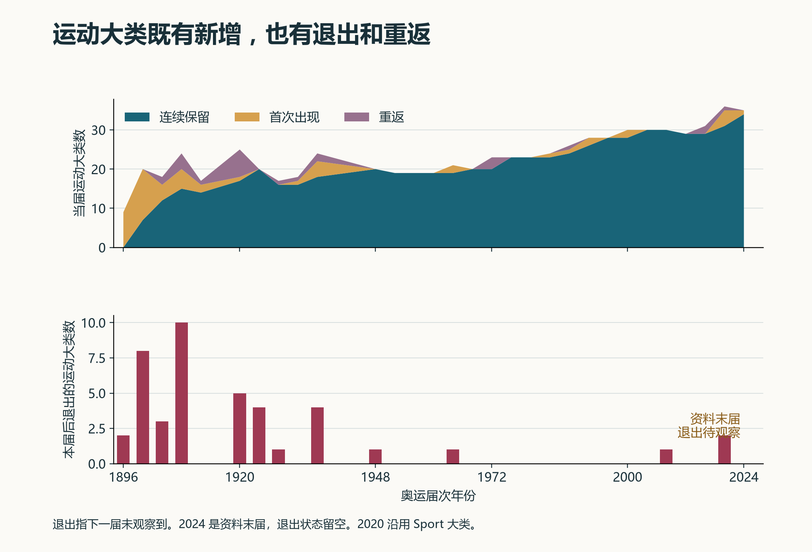

A 奖牌格局
获奖记录增长约16倍，前五代表团份额从83.9%降至41.8%。
分母为同届全部获奖运动员记录，排除1906。
独立解读含 261 个汉字，配 2 张图。下载解读原文 · 打开核心图
两张图与完整解读
A｜奖牌格局：规模膨胀，集中度下降
 逐届比较获奖记录总量与前五代表团份额。份额以同届全部获奖记录为分母。
逐届比较获奖记录总量与前五代表团份额。份额以同届全部获奖记录为分母。
1896 年只有 380 条参赛记录、12 个代表团和 143 条运动员奖牌记录；2024 年增至 14,892 条、206 个代表团和 2,281 条。奖牌记录绝对量膨胀约 16 倍，但前五代表团在同届奖牌记录中的份额由 83.9% 降至 41.8%。因此，只看奖牌记录总数会误以为强国越来越强；改看同届份额，看到的却是奥运覆盖范围扩大后的分散化。两种读法指向不同问题，不能互相替代。早期参赛格局极窄，跨百年的绝对量比较尤其需要谨慎。
 历届获奖记录累计量，按运动员获奖行计数，团体项目可产生多条记录。
历届获奖记录累计量，按运动员获奖行计数，团体项目可产生多条记录。
历史累计榜显示美国共有 5,597 条获奖运动员记录。这个值同时受到参赛届数、项目机会和团体人数影响，所以累计榜适合描述历史获奖记录总量，不等于官方小项奖牌榜，也不宜单独判定单届统治力。逐届榜单演变可在交互总览按年份切换，观察排名与集中度如何随届次变化。
口径与复核。 奖牌为运动员行；同一团体获奖可贡献多条记录。排除 1906；按当届实际记录计算，不把未参赛代表团补为零。数据表：逐届规模与集中度。
C 她的奥运
巴黎2024的49.1%、50.3%和45.9%分别对应参赛、获奖和女子专属小项。
排除1906。三项分母分别为全部参赛行、全部获奖行、当届全部小项。2024小项分母为329。
独立解读含 261 个汉字，配 2 张图。下载解读原文 · 打开核心图
两张图与完整解读
C｜她的奥运：参赛与获奖记录接近半数，小项结构仍有差异
 同看参赛行、获奖行和女子专属小项，巴黎 2024 的三种分母见本节上方。
同看参赛行、获奖行和女子专属小项，巴黎 2024 的三种分母见本节上方。
百年趋势显示，女性逐步从早期缺席走向接近半数的参赛规模。2024 年女性参赛记录占 49.1%，女性奖牌记录占 50.3%，而官方 329 个小项中的女子专属小项为 151 个，占 45.9%。这三个比例测量的是不同层次：参赛机会、获奖记录和赛程设置。女性奖牌记录超过一半，并不表示每一类项目都已经实现完全对称；团体项目人数、混合小项和项目组合都会改变统计结果。用三条线同时表达，能避免把一个接近 50% 的数字误当作全部答案。
 在各代表团内部比较女性参赛行占比与女性获奖行占比，两个占比分别以该团的参赛行和获奖行为分母。
在各代表团内部比较女性参赛行占比与女性获奖行占比，两个占比分别以该团的参赛行和获奖行为分母。
代表团内部也有反例：在获奖记录较多的代表团中，新西兰女性获奖记录占比比女性参赛记录占比高约 29.0 个百分点，巴西高约 25.7 个百分点；法国和波兰则分别低约 17.7 个百分点。这些差值更适合作为项目组合差异的提示，不应直接解释为国家制度优劣。
口径与复核。 历史参与和获奖按原始 Sex 字段对应的运动员记录计算；2024 小项属性使用任务一官方 329 项表，女子专属、男子专属和混合小项分列。数据表：女性参与获奖与小项、2024代表团女性结构。
D 项目演化
统一运动名称再判断出现、缺席和重返，2020年泛化字段不进入小项趋势。
排除1906，按归一运动家族识别出现状态。1896–2016为历史小项估计，2020留空，2024用329小项结果。
独立解读含 282 个汉字，配 2 张图。下载解读原文 · 打开核心图
两张图与完整解读
D｜项目演化：扩容、退出与重返
 历史小项按赛题 Event 字段计，2020 小项字段泛化，2024 采用官方小项结构。
历史小项按赛题 Event 字段计，2020 小项字段泛化，2024 采用官方小项结构。
按可比的清洗后 Event 唯一值估计，1896 年约 43 个小项，1920 年约 158 个，1984 年约 221 个，2000 年约 300 个；2024 年使用官方补充表，确认为 329 个。这里没有把 2020 年的原始 Event 值硬接进趋势，因为该字段从该届起出现泛化，会造成虚假的小项数量断崖。增长曲线也不是只增不减：拔河、槌球、马球和艺术竞赛留下历史痕迹；跆拳道、七人制橄榄球、滑板、冲浪和霹雳舞体现近年项目更新。花样滑冰曾出现在 1908、1920 年夏季奥运会，冰球也曾出现在 1920 年夏季奥运会，提醒我们不要用今天的“夏季／冬季”划分倒推早期赛程。

按归并后的项目大类识别新增、退出和重返。退出表示下一届未观察到，后续仍可能重返。
项目生命周期图将首次出现、上届缺席后重返和本届之后退出分开显示。它补足了总量曲线的盲点：即使总小项数变化很小，项目组合仍可能明显更替。图中的“退出”是基于所用数据在下一届未出现的操作性定义，不等于国际奥委会永久取消该运动。
口径与复核。 1896—2016 年是 Event 字段的历史估计值，2020 年留空，2024 年取官方 329 项；体育大类按任务一归一映射。数据表：逐届小项数量、代表项目出现矩阵、新增退出重返。